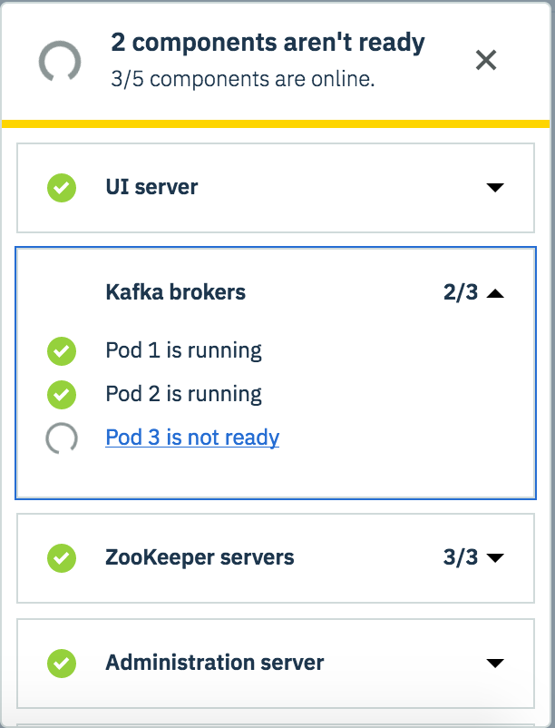

Understand the health of your IBM Event Streams deployment at a glance, and learn how to find information about problems.
Using the UI
The IBM Event Streams UI provides information about the health of your environment at a glance. In the bottom right corner of the UI, a message shows a summary status of the system health. If there are no issues, the message states System is healthy.
If any of the IBM Event Streams resources experience problems, the message states component isn’t ready.
To find out more about the problem:
- Click the message to expand it, and then expand the section for the component that does not have a green tick next to it.
 - Click the Pod is not ready link to open more details about the problem. The link opens the IBM Cloud Private UI. Log in as an administrator.
- To understand why the IBM Event Streams resource is not available, click the Events tab to view details about the cause of the problem.
- For more detailed information about the problem, click the Overview tab, and click More options > View logs on the right in the Pod details panel.
- For guidance on resolving common problems that might occur, see the troubleshooting section.
Using the CLI
You can check the health of your IBM Event Streams environment using the Kubernetes CLI.
- Ensure you have the Kubernetes command line tool installed, and configure access to your cluster.
- To check the status and readiness of the pods, run the following command, where
<namespace>is the space used for your IBM Event Streams installation:
kubectl -n <namespace> get pods
The command lists the pods together with simple status information for each pod. - To retrieve further details about the pods, including events affecting them, use the following command:
kubectl -n <namespace> describe pod <pod-name> - To retrieve detailed log data for a pod to help analyze problems, use the following command:
kubectl -n <namespace> logs <pod-name> -c <container_name>
For more information about using the kubectl command for debugging, see the Kubernetes documentation.
Note: After a component restarts, the kubectl command retrieves the logs for the new instance of the container. To retrieve the logs for a previous instance of the container, add the –previous option to the kubectl logs command.
Tip: You can also use the management logging service, or Elastic Stack, deployed by IBM Cloud Private to find more log information. Setting up the built-in Elastic Stack is part of the installation planning tasks.